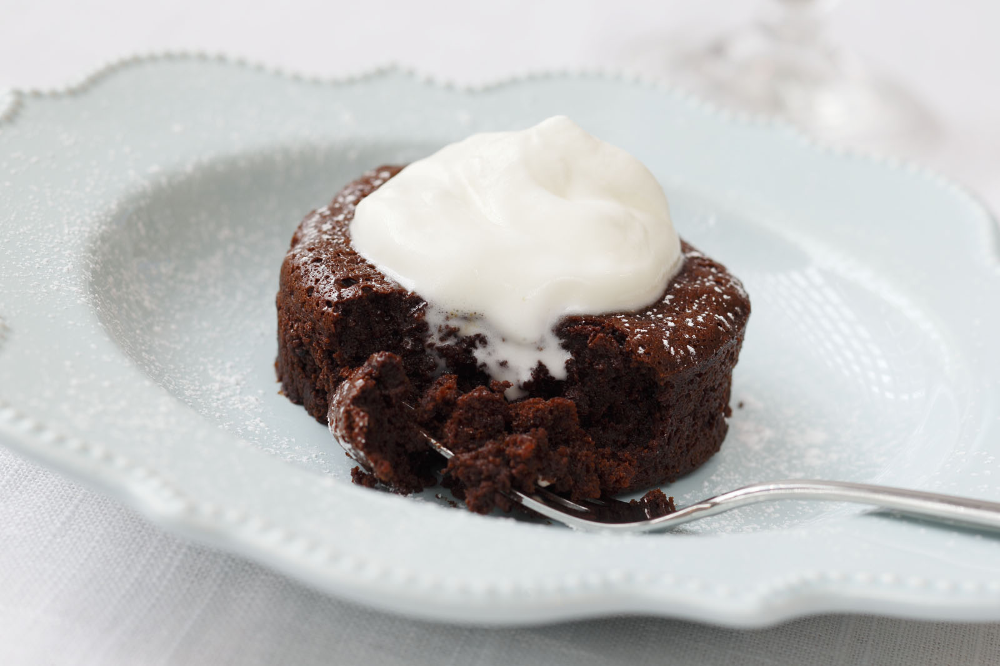

Molten Lava Cake
This recipe for Molten Lava Cake proves that Idahoan Mashed Potatoes don't have
to be saved for just savory applications!

Ingridients:
- 4 ounces bittersweet chocolate, broken into small pieces
- 4 ounces semisweet chocolate, broken into small pieces
- 1/4 cup unsalted butter, cut into small pieces
- 4 eggs
- 1/2 cup sugar
- 1/4 cup Idahoan® Boxed Original Mashed Potatoes, dry
- 1 tablespoon unsweetened cocoa powder
- 2 teaspoons vanilla extract
- 1 teaspoon instant espresso powder
- 1/2 teaspoon salt
Steps:
- Preheat oven to 375 degrees F.
- In a double boiler, melt the chocolate and butter.
- In a double boiler, melt the chocolate and butter.
- Alternative: Use a medium size stainless bowl that sits on top
of a small saucepan (with water in saucepan) if you do not have a
double boiler. Do not let any water get into the melting chocolate.
- Remove from heat and cool.
- In a large mixing bowl beat eggs with hand mixer for several minutes and thoroughly foamy.
- Add sugar, dry mashed potatoes, cocoa powder, vanilla extract, espresso
powder and salt. Beat a couple of minutes to mix.
- Add the melted chocolate mixture and beat for five minutes. This recipe works best if lots
of air is incorporated into the mixture to make the cakes light and airy.
- Pour into ramekins. DO NOT under bake or over bake the cakes. Bake for 15 to 17 minutes.
Keep your eye on them; you want them to be molten (a bit soft in the middle), but not too much.
- Let them rest a few minutes before serving. The center may sink a little - don't worry.
- Run a thin knife around the inside edge to help release the cakes.
- Top with powdered sugar and whip cream.